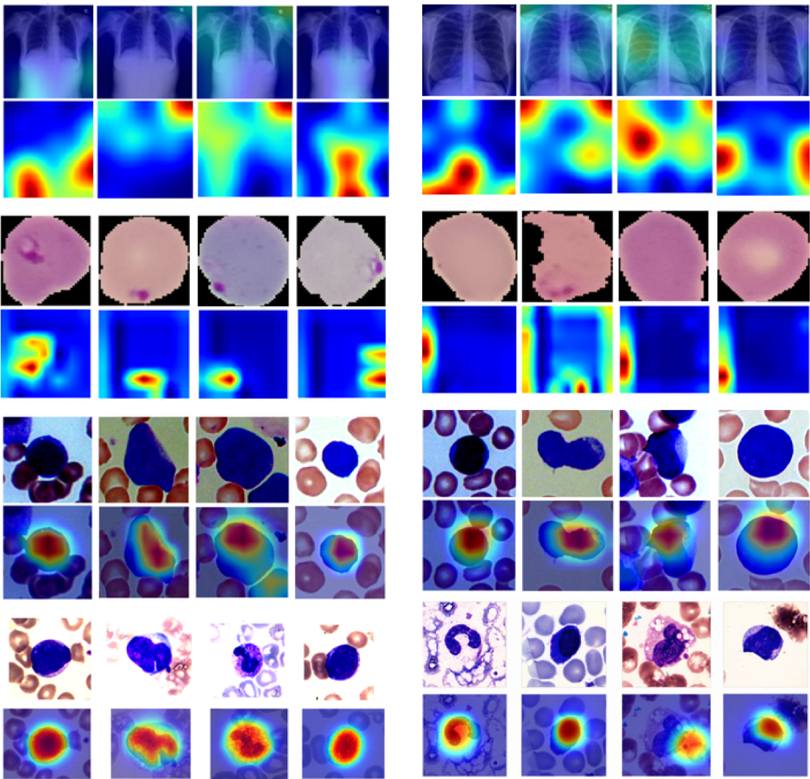
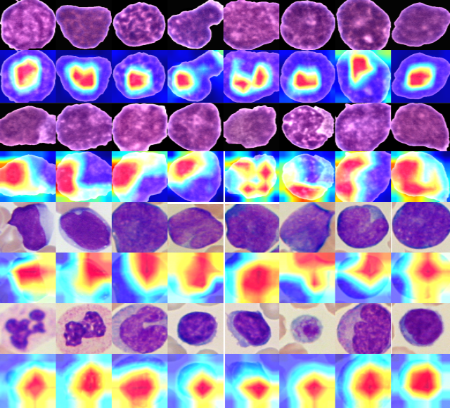
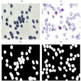

I am an M.S. student in Computer Science with a concentration in Data Science at the University of Tennessee at Chattanooga, where I also work as a Graduate Research Assistant at the Center for Urban Informatics and Progress (CUIP).

Engineering Reports
CIBM
Tissue and Cell